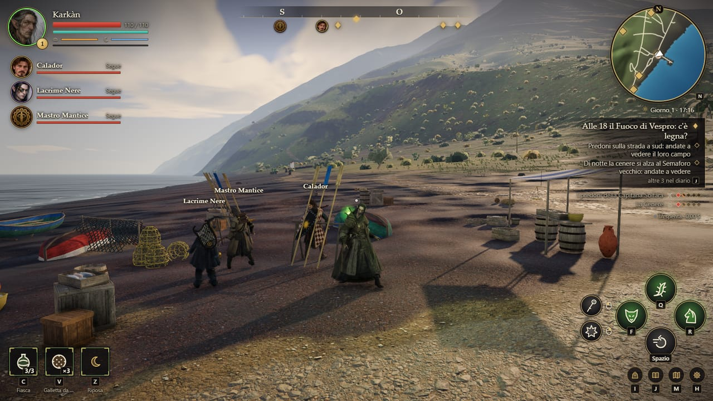
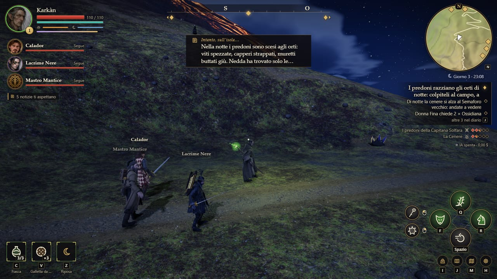
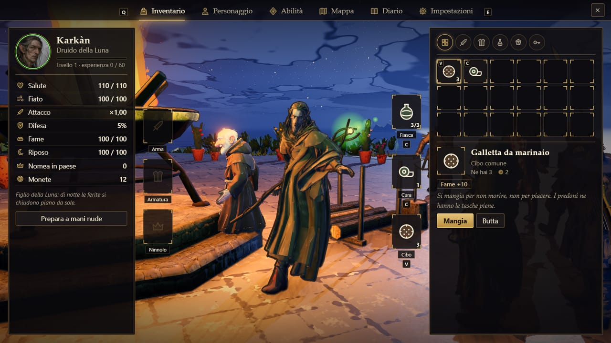

Per giocare
Come si entra
Davide accende il gioco
Il gioco gira sul suo computer. Quando lo avvia ti manda un secondo link, che finisce in trycloudflare.com e cambia ogni volta.
Apri quel link
Con Chrome o Edge, su un computer con mouse e tastiera. Niente da scaricare, niente account. Dal telefono non si gioca.
Scegli chi sei
Scrivi il nome e prendi uno dei quattro. Sei nel suo stesso mondo; gli altri due personaggi li guida l'IA e vi seguono.
- W A S D muovi
- Mouse guarda (clic sul gioco per catturarlo)
- Clic sin. colpo, in catena
- Clic des. colpo pesante, o parata con Calador
- Spazio schivata
- Shift corri
- Q F R le tre abilità
- Tab aggancia il nemico
- E usa, raccogli, parla
- C fiaschetta · V mangia
- Z riposa (il tempo corre)
- I zaino · J diario · M mappa
Se cadi o ricarichi la pagina rientri da solo, con lo stesso personaggio, nello stesso punto e con lo stesso zaino. Nel frattempo il tuo personaggio resta nel mondo, guidato dall'IA. Se il mouse non si lascia catturare, tieni premuto il tasto destro per girare la visuale.
Riprese dal gioco
L'isola, come in un film
Girate dentro il gioco vero con una cinepresa libera e senza interfaccia, a 60 fotogrammi al secondo. Niente audio.
Arrivo al molo di Scari, all'alba
La piazza alle sei: Zù Nino accende il Fuoco di Vespro
Di corsa nel prato verso Iddu, che butta fuoco
Lo scontro alla nave dei predoni, con il Nostromo
Di notte, con le luci dei personaggi
L'isola dall'alto: dal paese alla cima, fino a Ginostra
I quattro eroi: Karkàn, Calador, Lacrime Nere, Mastro Mantice
Karkàn cambia forma: lupo, poi cavallo
La Sciara del Fuoco di notte
Dal gioco che gira
Come si presenta
Clip registrate dal browser, senza montaggio: l'interfaccia è quella che vedrai.
Il paese e il Fuoco di Vespro
Alle 18 la piazza si riempie e il braciere si accende, se qualcuno ha portato la legna.
Lo scontro
Tempo reale, niente turni: segni a terra che si riempiono, schivata, colpo pesante, abilità.
Le forme di Karkàn
Lupo per combattere, cavallo per attraversare l'isola.
Iddu, di notte
La Sciara del Fuoco con le sue braci. Il vulcano erutta quando vuole lui.
Parlare con gli abitanti
Scrivi quello che vuoi dire: rispondono nel loro carattere, e se la ricordano.
La riva al tramonto
Sabbia nera, onde, la strada di luce del sole sull'acqua.
Da dove si comincia
La storia
Una tempesta fuori stagione vi ha presi al largo di Lipari e non vi ha più mollati. La barca ha ceduto a un tiro di sasso dal molo di Scari.
Siete a Strongyle, la rotonda. Il monte che fuma sopra le case qui lo chiamano Iddu, «Lui», e gli danno del voi.
Il paese ha tre guai, e ve li dicono prima ancora di chiedervi il nome: i predoni della Capitana Solfara accampati a sud, la Cenere che di notte scende dal monte, e Zù Nino che è troppo vecchio per il suo mestiere.
Il mestiere di Zù Nino è il Fuoco di Vespro: ogni sera alle sei, nel braciere in piazza, due pezzi di legna. Finché arde, dicono, Iddu sta buono.
Nessuno vi aspetta e nessuno aspetta voi: il muratore mura, la fornaia inforna, i predoni si avvicinano. Avete fame, siete zuppi, e tra poco fa buio.
Fate come vi pare. L'isola va avanti lo stesso.

Fantasy mediterraneo, asciutto, con ironia di paese: mare, pietra nera, capperi, vento, superstizione. Nessun narratore e nessuna missione affidata: le cose si vedono succedere, e chi vuole sapere chiede in giro.
Il gruppo
I quattro
Due li giocate voi, due li guida l'IA: seguono, combattono, commentano quello che succede, e ogni tanto partono da soli. Il gruppo sale di livello insieme.
Karkàn
DRUIDO DELLA LUNA
- Rovi — radici dove miri: ferite e nemici inchiodati
- Forma di lupo — veloce, morsi rapidi
- Forma di cavallo — per attraversare l'isola
Calador
PALADINO
- Carica del giuramento — travolge e sbilancia
- Imposizione delle mani — cura chi è vicino
- Sfida — i nemici si voltano verso di lui
MODELLO NUOVO, DAI RIFERIMENTI
Lacrime Nere
BARDO
- Nota stonata — interrompe i colpi e ributta indietro
- Ballata del coraggio — chi è vicino colpisce più forte
- Ninna nanna — addormenta i nemici comuni
ANCORA UNA CONTROFIGURA
Mastro Mantice
ARTIFICIERE
- Pignatta — una pentola di polvere che esplode e incendia
- Granchio d'ottone — una torretta a molla
- Soffio del mantice — un cono di fuoco
Il primo pilastro
Il mondo non aspetta
L'isola ha un orologio e va avanti anche quando non guardate, anche a gioco spento (fino a un giorno). Non potete essere in due posti insieme: è lì che nascono le scelte.
paese e luoghidove c'è pericolocurve di livello ogni 100 m, dalla mappa del gioco
- ogni seraAlle 18 il Fuoco di Vespro. Se in piazza c'è legna Zù Nino lo accende e la notte è più quieta. Se manca, la cenere avanza.
- di giornoQuindici abitanti con i loro orari. Lavorano, mangiano, vanno a messa, dormono. Hanno un carattere, un segreto, e chiedono cose al gruppo.
- a sudI predoni della Capitana Solfara. Se nessuno li ferma, di notte scendono agli orti e poi alle case. Il loro campo cresce di giorno in giorno.
- dal monteLa Cenere. Sale dal Semaforo vecchio con le sue creature, fino al Guardiano sulla cima. Il vulcano erutta per conto suo.
- intantoIl cantiere, i campi, la fame. Una casa sale a stadi se portate legna e pietra. Si raccoglie, si pesca, si cucina, si forgia; chi non dorme e non mangia colpisce peggio.
Che cosa fa l'IA
Con gli abitanti si parla scrivendo quello che si vuole: rispondono nel loro carattere, possono mentire, offendersi, seguirvi o chiamare le guardie. I compagni commentano ciò che è appena successo. Un regista lega il giorno di ieri a quello di oggi. Senza IA il gioco gira lo stesso, con battute scritte: è più sordo, non rotto. Un'ora di gioco costa pochi centesimi.
Le mani
Il combattimento
In tempo reale, sul modello dei souls-like, in versione leggera: si legge l'avversario, si sceglie il momento, si paga ogni errore con il fiato.
- Fiato. Colpi, corsa e capriole lo consumano; torna in fretta se ti fermi, piano se pari.
- Capriola. Quattro metri e mezzo, con un attimo in cui niente ti tocca.
- Catene e colpo pesante. Clic in fila per la catena; il pesante apre gli scudi e sbilancia.
- Parata e parata perfetta. Con Calador: alzare lo scudo all'ultimo istante apre il nemico a un contrattacco doppio.
- Colpo alle spalle. Fa di più: in due conviene tenerne uno occupato.
- Segni a terra. Ogni colpo nemico si annuncia: un bordo che si riempie. Esci o rotola via.
- Fiaschette. Tre sorsi di cura, che tornano riposando a un letto o a un'edicola.
- A terra e rialzati. Chi cade ha venti secondi: un compagno vicino lo rimette in piedi.
Chi si incontra
- Predone
- Predone arciere
- Cinereo
- La Capitana Solfara
- Il Guardiano di Cenere
- Predone scudiero
- Il Nostromo
- Cinereo gonfio
Due capi chiudono i due fronti: la Capitana Solfara al campo dei predoni e il Guardiano di Cenere sul Pizzo. Sulla nave in secca comanda il Nostromo.
Se nessuno fa niente
I due guai dell'isola
Ognuno sale di un gradino quando lo si lascia stare, e ogni gradino cambia il paese. Si fermano solo andandoci.
I predoni della Capitana Solfara
- I predoni stanno al loro campo, a sud. Per ora guardano il paese come si guarda una dispensa.
- Vedette dei predoni sulla strada a sud della guardiola: contano chi passa e a che ora.
- I predoni hanno razziato gli orti di notte. Raccolto perso, terrazze calpestate: il cibo in paese costa di più.
- I predoni hanno preso un paesano e lo tengono legato al campo. Il suo posto in paese è vuoto.
- I predoni hanno bruciato il cantiere. La casa è tornata un mucchio di pietre nere, Mastro Saro è ferito.
- I predoni hanno preso il molo. Donna Fina è sparita, c'è gente armata in piazza e il paese sta chiuso in casa.
La Cenere
- Il monte fuma come sempre. La cenere, per ora, cade e resta dove cade.
- Di notte, al Semaforo vecchio, la cenere si alza in piedi: i cinerei.
- I cinerei arrivano fino all'ovile. Capre morte, e Tano che non vuole più dormirci.
- Zù Nino è stato aggredito ed è a letto. Il Fuoco di Vespro, se non lo accendete voi, non lo accende nessuno.
- Cenere sul paese. Se il fuoco è spento, di notte i cinerei entrano in piazza; la gente si barrica.
- Iddu si sveglia. Ogni notte lapilli sul paese, e ogni mattina una casa in meno.
Con chi si parla
Chi abita l'isola
Quindici persone con un mestiere, degli orari, un carattere e qualcosa che non dicono. Si parla scrivendo quello che si vuole; ogni giorno due di loro chiedono una mano.
- Zù NinoFuochista e campanaro
- AgataOstessa e fornaia
- Don LiborioPrete di San Vincenzo
- Gnà RosaErborista e levatrice
- Console GuarnieriConsole dell'isola
- Mastro SaroMuratore
- NeddaContadina degli orti
- Donna FinaMercante e speziale
- VannaCapo dei campieri
- ColaCampiere
- BastianoPescatore
- TanoPastore
- Messer LapilloNotaio di Iddu
- Zà CarmelaL'ultima di Ginostra
- TuriPescatore di totani
Tra uno scontro e l'altro
Sopravvivere e crescere
- Fame e riposo. Scendono piano. A pancia vuota il fiato torna più lento; chi non dorme colpisce peggio.
- Raccogliere. Legna, pietra lavica, capperi, fichi d'India, erbe, pesce, ossidiana, zolfo, rottami.
- Cucinare. A un fuoco acceso: pesce arrosto, zuppa, pane cunzato, con un vantaggio per qualche minuto.
- Forgiare. Alla forgia: filo d'ossidiana per le armi, giubba di pelle, mantello di cenere.
- Un livello per tutti. L'esperienza è del gruppo: i quattro salgono insieme, nessuno resta indietro.
- Equipaggiamento. Armi di classe, armature e ninnoli nei bauli sparsi; i pezzi unici li lasciano i capi.
- Commercio. Al molo e in paese si compra e si vende; i prezzi salgono quando gli orti vengono razziati.
- Riposare. Quando tutti riposano il tempo corre quaranta volte più in fretta: è così che si arriva al giorno dopo.
37 luoghi con un nome
L'isola
È Stromboli in scala vera, dal rilievo dell'INGV: dal paese a Ginostra ci sono quattro chilometri a piedi, o una corsa a cavallo.
Il paese
- Piazza di San Vincenzo Pietra nera lucidata dai passi, e al centro il braciere: qui ogni sera si accende il Fuoco di Vespro.
- Chiesa di San Vincenzo Calce bianca, una campana sola, e un santo che guarda il monte invece del mare.
- Osteria «La Sciara» Odore di pane e di pesce arrosto: qui si mangia, si dorme e si sa tutto di tutti.
- La forgia Un'incudine, un mantice sfiatato e carbone di vite: chi sa battere il ferro, qui può farlo.
- Il cantiere Quattro fili tesi e un mucchio di pietre: Mastro Saro giura che diventerà una casa.
- Gli orti Terrazze di capperi e viti basse, tenute su da muretti a secco e dalla testardaggine.
- Molo di Scari Barche tirate in secco, reti stese e il banco di Donna Fina: tutto ciò che arriva sull'isola passa da qui.
- La guardiola Una torretta tozza sulla strada a sud: da qui i campieri guardano chi sale dal campo dei predoni.
- Casa del Console L'unica casa con due piani e i vetri alle finestre. Le persiane guardano il molo, non la piazza.
Luoghi
- L'Osservatorio Un belvedere di pietra davanti alla Sciara: da qui si guarda Iddu negli occhi quando butta fuoco.
- Grotta di Eolo Una bocca buia a pelo d'acqua. Dentro il vento fischia come uno che ti chiama per nome.
- Ginostra Case bianche con le porte aperte e nessuno dentro. Sui tavoli, i piatti dell'ultima cena.
- L'ovile Un recinto di pietre e ginestre sopra il paese. Le capre di Tano ti guardano come si guarda un forestiero.
- L'edicola Una nicchia con un santo scolorito e un lumino sempre acceso. Di notte, dicono, qualcuno ci tiene bottega.
- Piscità Quattro case basse tra i capperi, a nord del paese. Qui il tempo lo segnano i totani, non la campana.
- Timpone del Fuoco Un cocuzzolo bruciato sopra Ginostra. Le donne salivano fin qui la sera, a cantare verso il cratere.
- Edicola di Santa Barbara Santa Barbara, che guarda dal fuoco e dal fulmine, dipinta su una maiolica annerita. Qui si può riposare; e chi cade, è da qui che riparte.
- Edicola di San Bartolo San Bartolo, patrono delle isole, con un coltello in mano e l'aria di chi ne ha viste tante. Qui si può riposare; e chi cade, è da qui che riparte.
- Edicola delle Tre Croci Tre croci di ferro per tre barche che non tornarono. Qualcuno cambia ancora i fiori. Qui si può riposare; e chi cade, è da qui che riparte.
- Edicola della Madonna del Mare Una Madonnina azzurra voltata verso il largo, con una rete da pesca per mantello. Qui si può riposare; e chi cade, è da qui che riparte.
- Edicola di Santa Lucia Santa Lucia con gli occhi nel piatto, che protegge chi cammina al buio. Il lumino lo tiene acceso una mano sola. Qui si può riposare; e chi cade, è da qui che riparte.
- Edicola di Sant'Eligio Sant'Eligio dei fabbri, con il martello e una tenaglia: qui sotto, dicono, batteva la forgia vecchia. Qui si può riposare; e chi cade, è da qui che riparte.
Natura
- Spiaggia nera Sabbia di lava che scotta a mezzogiorno. All'alba, con una lenza, qualcosa si tira sempre su.
- Sciara del Fuoco Il pendio dove il monte scarica in mare ciò che non vuole più: ossidiana, zolfo, e sassi che non avvisano.
- Strombolicchio Uno scoglio dritto come un dente, col faro in cima. I vecchi dicono che è il tappo che Iddu sputò il primo giorno.
- Ficogrande La spiaggia delle barche, sotto un fico più vecchio del paese. Di notte i pescatori accendono le lampare e il mare sembra un altro cielo.
- Punta Labronzo La punta sotto il Semaforo vecchio: scogli neri, vento teso, e la prima vista sulla Sciara che fuma in mare.
- Punta Lena La punta a sud, tutta faraglioni e risacca. Il pesce qui è grosso, e non solo il pesce tiene d'occhio la costa.
- I Vancori La cresta più alta dell'isola. Da quassù si vedono tutte e sette le Eolie, lo zolfo fiorisce giallo tra i sassi e il vento porta via le parole.
Dove stanno i predoni
- Il campo dei predoni Tende di vela rattoppata, fuochi bassi e uno stemma cucito al contrario: la gente della Capitana Solfara.
- L'avamposto di Punta Lena Una palizzata di remi e tavole di relitto. Da qui i predoni tengono chiusa la costa a sud, scudo contro scudo.
- La «Carusa» La nave dei predoni, in secca su un fianco davanti a Ginostra. Panni stesi tra le sartie, le pompe che vanno giorno e notte.
Tane della Cenere
- Il Semaforo vecchio Un rudere a picco su Labronzo. La cenere qui non si posa: sta in piedi, e aspetta la notte.
- Il Pizzo La terrazza sopra i crateri. Il vento sa di zolfo, la terra è calda sotto i piedi, e qualcosa di grande respira.
- Nido di Rina Grande Una conca di cenere tiepida che si gonfia e si sgonfia, come il petto di uno che dorme male.
- Nido della Fossetta Un avvallamento dove la cenere non cade: sale. Intorno, impronte che scendono verso il paese.
- Nido dei Vancori Il più alto dei nidi, sotto la cresta. Qui la Cenere ha facce, e qualcuna si volta.




Stesse inquadrature, due versioni
Prima e dopo
La prima consegna aveva il gioco ma non la grafica. La seconda versione rifà solo ciò che si vede: luce e aria, terreno e mare, case, vegetazione, personaggi, effetti, interfaccia. Regole e mondo sono identici, e si può giocare l'una o l'altra. Trascina la linea.
Il paese da est
Da scatole bianche a case eoliane con terrazze, colonne e pergolati; il campanile fa da riferimento.
Lo scalo al tramonto
Foschia a strati: la cima ora è lontana. Sabbia nera con materia, barche con i nomi dipinti.
La piazza a mezzogiorno
Il braciere, il pozzo, il sagrato della chiesa.
Il prato sopra il paese
Ulivi, macchia ed erba fine al posto del verde unico.
La sera al fuoco
La notte è blu e si legge; il fuoco e le finestre sono i soli punti caldi.
Dentro l'osteria
Un interno vero: camino, tavoli, letti per riposare.
La riva al tramonto
Il mare aveva una fascia azzurra piatta: ora ha onde, riflessi e schiuma.
Lo scontro alla nave
Gli avvisi dei colpi nemici non sono più zone rosse piene; i nomi compaiono solo quando servono.
Gli eroi da vicino
Via il contorno da cartone. Calador è il modello nuovo, con la casacca a rombi e lo scudo col sole.
La schermata del titolo
Un'ora e mezza basta
Che cosa provare
- I primi trenta secondi, senza leggere niente.Si capisce come muoversi e colpire? Che cosa avete provato a fare che non ha funzionato?
- Le vedette sulla strada a sud.La catena di colpi, la capriola dentro un segno a terra, il colpo pesante per aprire lo scudo, il colpo alle spalle mentre l'altro lo tiene occupato. Il colpo «morde»? Morire è colpa vostra o del gioco?
- Dividetevi.Uno resta in paese (parlare, una richiesta, portare legna), l'altro va all'edicola e all'ovile. Ritrovatevi alle 18 in piazza per il fuoco. Vi siete raccontati qualcosa?
- Ignorate apposta una cosa.Niente legna, niente campo. Dormite all'osteria fino al mattino e leggete la Cronaca nel diario. È il mondo che non aspetta, o è solo un contatore che sale?
- Una chiacchierata storta.Scegliete un abitante e provate a farvi dire il suo segreto, o a farlo arrabbiare. Ha carattere? Mente? Si vede che cosa fa dopo?
- Il campo dei predoni in due, con la Capitana.Se cadete, rialzatevi a vicenda. È uno scontro o una rissa confusa?
- Se resta tempo.Il Semaforo di notte, oppure la corsa fino a Ginostra con Karkàn a cavallo. L'isola fuori dal paese sembra vuota?
Le tre domande a cui la serata deve rispondere
- Il combattimento in tempo reale è la strada giusta, anche così?
- Il mondo che va avanti da solo si sente giocando, o lo si nota solo leggendo il diario?
- Che cosa vi ha fatto parlare tra di voi? Quello è il gioco: il resto è contorno.
Senza giri di parole
Che cosa non è ancora
Provato
- La versione con la grafica nuova è stata giocata da due browser veri collegati insieme, quindici passi su quindici: muoversi, combattere, parlare con un abitante con l'IA accesa, far passare un giorno, cadere e rientrare, riavviare il server.
- Mouse e tastiera veri, sempre sulla grafica nuova: diciannove controlli su diciannove, dalla scelta del personaggio ai colpi, alla capriola, ai menu.
- Con due browser sulla stessa scheda video da gioco, a 1920×1080 ciascuno: tra 206 e 310 fotogrammi al secondo al livello alto, di più ai livelli medio e basso.
- La grafica è stata guardata nel gioco che gira, reparto per reparto e poi tutta insieme sulle stesse inquadrature fisse, per due giri di correzioni.
- Immagini e clip di questa pagina vengono dal gioco che gira, senza ritocchi.
Non provato, o debole
- Nessuna persona l'ha ancora giocato per una serata: se è divertente e se è bilanciato lo dite voi.
- Girare la visuale con il mouse catturato non si può simulare nelle prove automatiche: è la prima cosa da controllare a mano.
- Entrare da casa attraverso il link di Davide non è mai stato provato davvero.
- Lacrime Nere è ancora una controfigura, con cappello e barba che non sono suoi.
- I volti non si muovono: la testa si gira verso chi parla o verso il nemico, ed è tutto.
- Lupo e cavallo sono modelli semplici; capra e gatto sono ancora fatti di forme elementari.
- La linea di costa è spigolosa, le pareti ripide non hanno rocce vere, le nuvole sono dipinte.
- I contenuti bastano per due o tre serate: due fronti, quindici abitanti, una decina di tipi di nemici.
- Su un portatile senza scheda video il gioco abbassa da solo la qualità, ma su un computer così non è stato provato.
Dietro le quinte
Com'è fatto
- Nel browser. Chi ospita accende il gioco sul suo computer; gli altri entrano da un link, senza installare niente.
- Un mondo solo. Regole, orologio, abitanti e nemici stanno sul computer di chi ospita: tutti vedono la stessa isola.
- L'isola vera. Rilievo TINITALY dell'INGV a 10 metri; sentieri e case da OpenStreetMap.
- L'IA dentro il gioco. Fa parlare gli abitanti, commentare i compagni e legare un giorno all'altro. Costa pochi centesimi l'ora, e se manca il gioco prosegue con battute scritte.
- L'IA che l'ha costruito. Tutto il gioco è stato scritto in due giorni, dal 9 all'11 novembre 2026, da Claude con una squadra di sotto-agenti, su indicazioni di Davide.
- È una prova. Contenuti per due o tre serate. Serve a capire se il gioco diverte, prima di farlo crescere.